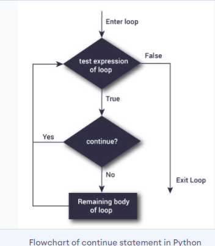
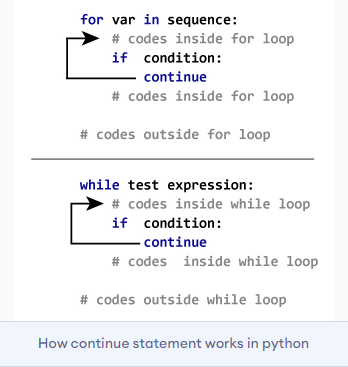

The continue statement is used to skip the rest of the code inside a loop for the current iteration only. Loop does not terminate but continues on with the next iteration.
Syntax of Continue
continue

The working of continue statement in for and while loop is shown below.
Example: Python continue
# Program to show the use of continue
#statement inside loops
for val in "string":
if val == "i":
continue
print(val)
print("The end")
Output
s
t
r
n
g
The end
This program is same as the above example except the break statement has been replaced with continue
We continue with the loop, if the string is i, not executing the rest of the block. Hence, we see in our output that all the letters except i gets printed.